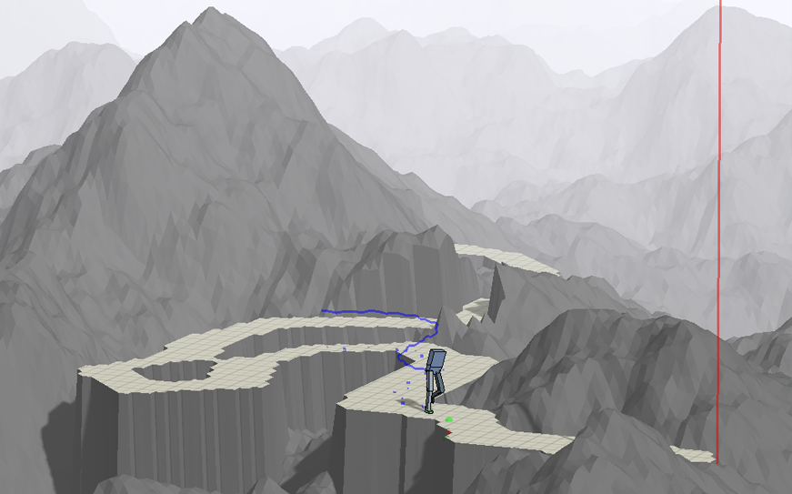
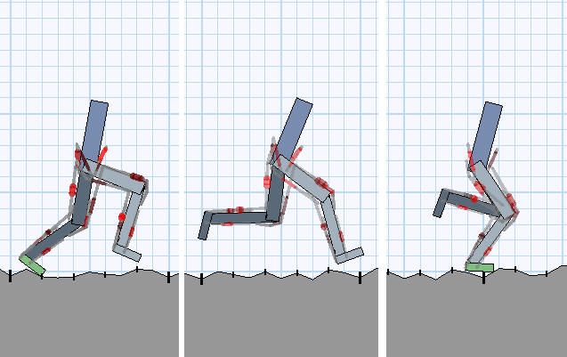
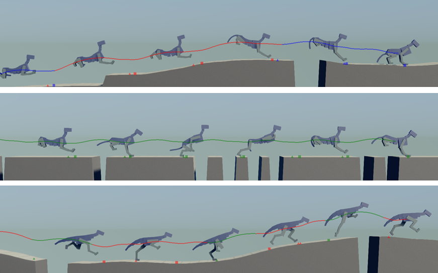
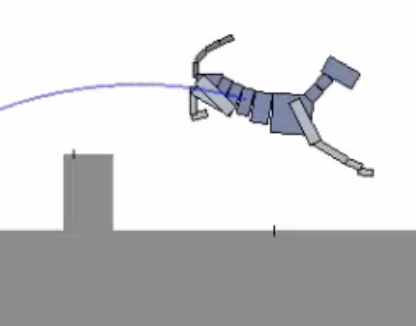

I'm a M.Sc student at the University of British Columbia, advised by Michiel van de Panne. My work lies in the intersection between computer graphics and machine learning, with a focus on deep reinforcement learning for motion control of simulated characters. I have previously interned at Adobe Research, Disney Research, Microsoft (343 Industries), and Capcom.
|  |
DeepLoco: Developing Locomotion Skills Using Hierarchical Deep Reinforcement Learning Xue Bin Peng , Glen Berseth, KangKang Yin, Michiel van de Panne ACM Transactions on Graphics (Proc. SIGGRAPH 2017, conditionally accepted) [Project page] |
|  |
Learning Locomotion Skills Using DeepRL: Does the Choice of Action Space Matter? Xue Bin Peng , Michiel van de Panne ArXiv; presentation at NIPS 2016 Deep Reinforcement Learning Workshop [Project page] |
|  |
Terrain-Adaptive Locomotion Skills Using Deep Reinforcement Learning Xue Bin Peng , Glen Berseth, Michiel van de Panne ACM Transactions on Graphics (Proc. SIGGRAPH 2016) [Project page] |
|  |
Dynamic Terrain Traversal Skills Using Reinforcement Learning Xue Bin Peng , Glen Berseth, Michiel van de Panne ACM Transactions on Graphics (Proc. SIGGRAPH 2015) [Project page] |